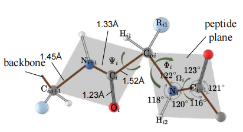

|
Jiangbin Zheng (Ph.D Candidate)
Zhejiang University & Westlake University , Hangzhou, China Languages: Chinese, English Email: zhengjiangbin(at)westlake.edu.cn / zhengjiangbin(at)zju.edu.cn Hobbies: Sports, Photography, Writing, Software Design
|

Biography [Top]
Jiangbin Zheng is pursuing his Ph.D at AI Lab, Westlake University, China, under the supervision of Chair Prof. Stan Z. Li (IEEE Fellow, IAPR Fellow, Chief Scientist of BioMap). He is currently focusing on AI for Life Science (e.g., AI + protein design, AI + enzyme engineering). Previously he focused on Natural Language Processing (NLP), Computer Vision (CV), Multi-modality research (e.g., AI for Sign Language Translation) at NLP Lab, Xiamen University, China.
RESEARCH INTERESTS: AI for Life Science, Multi-Modality, NLP, CV.
Selected Projects [Top]
Publications [Top]
| Selected Publications: |
|
| |
DapPep: Domain Adaptive Peptide-agnostic Learning for Universal T-cell Receptor-antigen Binding Affinity Prediction [C] Jiangbin Zheng, Qianhui Xu, Ruichen Xia, Stan Z. Li* IEEE International Conference on Acoustics, Speech, and Signal Processing (ICASSP) 2025 [Paper] [BibTex] |
| |
Pan-protein Design Learning Enables Task-adaptive Generalization for Low-resource Enzyme Design [C] Jiangbin Zheng, Ge Wang, Han Zhang, Stan Z. Li* IEEE International Conference on Acoustics, Speech, and Signal Processing (ICASSP) 2025 [Paper] [BibTex] |
| |
MetaEnzyme: Meta Pan-Enzyme Learning for Task-Adaptive Redesign [C] Jiangbin Zheng, Han Zhang, Qianqing Xu, An-Ping Zeng, Stan Z. Li* ACM MULTIMEDIA 2024 (ACMMM 2024) [Paper] [Code] [BibTex] |
| |
Progressive Multi-Modality Learning for Inverse Protein Folding [C] Jiangbin Zheng, Stan Z. Li* IEEE Conference on Multimedia Expo 2024 (ICME 2024) (Oral) [Paper] [Code] [BibTex] |
| |
CCPL: Cross-modal Contrastive Protein Learning [C] Jiangbin Zheng, Stan Z. Li* 27th International Conference on Pattern Recognition (ICPR 2024) [Paper] [BibTex] |
 |
CVT-SLR: Contrastive Visual-Textual Transformation for Sign Language Recognition with Variational Alignment [C] Jiangbin Zheng, Yile Wang, Cheng Tan, Siyuan Li, Ge Wang, Jun Xia, Yidong Chen, Stan Z. Li* The IEEE/CVF Conference on Computer Vision and Pattern Recognition (CVPR 2023) (Highlight/Oral presentation; Acceptance rate: 2.5% of submitted papers) [Paper] [Code] [BibTex] |
| |
Using Context-to-Vector with Graph Retrofitting to Improve Word Embeddings [C] Jiangbin Zheng, Yile Wang, Ge Wang, Jun Xia, Yufei Huang, Guojiang Zhao, Yue Zhang, Stan Z. Li* Annual Meeting of the Association for Computational Linguistics (ACL 2022) [Paper] [Code] [BibTex] |
 |
Enhancing Neural Sign Language Translation by Highlighting the Facial Expression Information [J] Jiangbin Zheng, Yidong Chen, ChongWu, XiaodongShi, Suhail Muhammad Kamala Neurocomputing, 2021 [Paper] [BibTex] |
| |
A Document-Level Neural Machine Translation Model with Dynamic Caching Guided by Theme-Rheme Information [C] Yiqi Tong†, Jiangbin Zheng†, Hongkang Zhu, Yidong Chen, Xiaodong Shi (Co-1st Author) The 28th International Conference on Computational Linguistics (COLING 2020) [Paper] [BibTex] |
| |
An Improved Sign Language Translation Model with Explainable Adaptations for Processing Long Sign Sentences [J] Jiangbin Zheng, Zheng Zhao, Min Chen, Jing Chen, Chong Wu, Yidong Chen, Xiaodong Shi, Yiqi Tong Computational Intelligence and Neuroscience (CIN), 2020 [Paper] [BibTex] |
| |
A Study on Differences between Simplified and Traditional Chinese Based on Complex Network Analysis of the Word Co‐Occurrence Networks [J] Zhongqiang Jiang, Dongmei Zhao, Jiangbin Zheng*, Yidong Chen Computational Intelligence and Neuroscience (CIN), 2020 [Paper] [BibTex] |
| |
Fuzzy SLIC: Fuzzy Simple Linear Iterative Clustering [J] Chong Wu, Jiangbin Zheng, Zhenan Feng, Houwang Zhang, Le Zhang, Jiawang Cao, Hong Yan IEEE Trans. on Circuits and Systems for Video Technology (TCSVT), 2020 [Paper] [BibTex] |
| Selected Preprints: |
|
| |
EasyEvo: Lightweight Protein Landscape Extrapolation with Progressive Evolutionary Encoding and Implicit Homology Aggregation Jiangbin Zheng, et. al., Stan Z. Li Submitted to IEEE Transactions on Knowledge and Data Engineering (TKDE) [Paper] [BibTex] |
 |
Leveraging Graph-based Cross-modal Information Fusion for Neural Sign Language Translation Jiangbin Zheng, Siyuan Li, Cheng Tan, Chong Wu, Yidong Chen, Stan Z. Li arXiv, 2023 [Paper] [BibTex] |
| Selected Publications (Co-author): |
|
|  |
Learning Complete Protein Representation by Dynamically Coupling of Sequence and Structure [C] Bozhen Hu, Cheng Tan, Jun Xia, Yue Liu, Lirong Wu, Jiangbin Zheng, Yongjie Xu, Yufei Huang, Stan Z. Li* NeurIPS 2024 [Paper] [BibTex] |
| |
AdaNovo: Towards Robust De Novo Peptide Sequencing in Proteomics against Data Biases [C] Jun Xia, Shaorong Chen, Jingbo Zhou, Xiaojun Shan, Wenjie Du, Zhangyang Gao, Cheng Tan, Bozhen Hu, Jiangbin Zheng, Stan Z. Li* NeurIPS 2024 [Paper] [BibTex] |
| |
Deciphering RNA Secondary Structure Prediction: A Probabilistic K-Rook Matching Perspective [C] Cheng Tan, Zhangyang Gao, CAO Hanqun, Xingran Chen, Ge Wang, Lirong Wu, Jun Xia, Jiangbin Zheng, Stan Z. Li* ICML 2024 [Paper] [BibTex] |
| |
Cross-gate mlp with protein complex invariant embedding is a one-shot antibody designer [C] Cheng Tan, Zhangyang Gao, Lirong Wu, Jun Xia, Jiangbin Zheng, Xihong Yang, Yue Liu, Bozhen Hu, Stan Z. Li* Proceedings of the AAAI Conference on Artificial Intelligence (AAAI 2024) [Paper] [BibTex] |
| |
Protein 3d graph structure learning for robust structure-based protein property prediction [C] Yufei Huang, Siyuan Li, Lirong Wu, Jin Su, Haitao Lin, Odin Zhang, Zihan Liu, Zhangyang Gao, Jiangbin Zheng, Stan Z. Li* Proceedings of the AAAI Conference on Artificial Intelligence (AAAI 2024) [Paper] [BibTex] |
| |
DiscoGNN: A Sample-Efficient Framework for Self-Supervised Graph Representation Learning [C] Jun Xia, Shaorong Chen, Yue Liu, Zhangyang Gao, Jiangbin Zheng, Xihong Yang, Stan Z. Li* 2024 IEEE 40th International Conference on Data Engineering (ICDE 2024) [Paper] [BibTex] |
| |
Moganet: Multi-order gated aggregation network [C] Siyuan Li, Zedong Wang, Zicheng Liu, Cheng Tan, Haitao Lin, Di Wu, Zhiyuan Chen, Jiangbin Zheng, Stan Z. Li* The Twelfth International Conference on Learning Representations (ICLR 2024) [Paper] [BibTex] |
| |
Understanding the limitations of deep models for molecular property prediction: Insights and solutions [C] Jun Xia, Lecheng Zhang, Xiao Zhu, Yue Liu, Zhangyang Gao, Bozhen Hu, Cheng Tan, Jiangbin Zheng, Siyuan Li, Stan Z Li* Advances in Neural Information Processing Systems (NeurIPS 2023) [Paper] [BibTex] |
| |
Wordreg: Mitigating the gap between training and inference with worst-case drop regularization [C] Jun Xia, Ge Wang, Bozhen Hu, Cheng Tan, Jiangbin Zheng, Yongjie Xu, Stan Z Li* ICASSP 2023-2023 IEEE International Conference on Acoustics, Speech and Signal Processing (ICASSP 2023) [Paper] [BibTex] |
 |
Star Topology Convolution for Graph Representation Learning [J] Chong Wu, Zhenan Feng, Jiangbin Zheng, Houwang Zhang, Jiawang Cao, Hong Yan Complex & Intelligent Systems, 2022 [Paper] [BibTex] |
| |
Generating Diverse Back-Translations via Constraint Random Decoding [C] Yiqi Tong, Yidong Chen, Guocheng Zhang, Jiangbin Zheng, Hongkang Zhu, Xiaodong Shi Conference CCMT, 2021 (Oral) [Paper] [BibTex] |
| |
Technical Approaches to Chinese Sign Language Processing: A Review [J] Suhail Muhammad Kamal, Yidong Chen, Shaozi Li, Xiaodong Shi, Jiangbin Zheng IEEE ACCESS, 2019 [Paper] [BibTex] |
Open Sources [Top]
- Awesome AI Sign Language Papers
[Github]
If you are new or interested in AI sign language field, we highly recommend you browse this repository. We have collected papers on AI Sign Language (SL) comprehensively and categorized them according to different criteria (by time, type of research, institution, etc.). - CVT-SLR
[Github]
Official code of the CVPR 2023 paper (Highlight presentation) CVT-SLR: Contrastive Visual-Textual Transformation for Sign Language Recognition with Variational Alignment - Context2Vector
[Github]
Official code of the ACL 2022 paper Using Context-to-Vector with Graph Retrofitting to Improve Word Embeddings
Selected Awards [Top]
The Global 1st Place for three consecutive months
The Global Top 25 Place
National 2nd Prize, ranking 11~25/1122 overall and top 3~5 in Technology Innovation Track
Champion & Grand Prize
National 1st Prize & Huawei Special Award
National Bronze Award
National 2nd Prize (2 awards in total)
National Bronze Award
The China Internet+ College Students Innovation and Entrepreneurship Competition, 2016
National Bronze Award